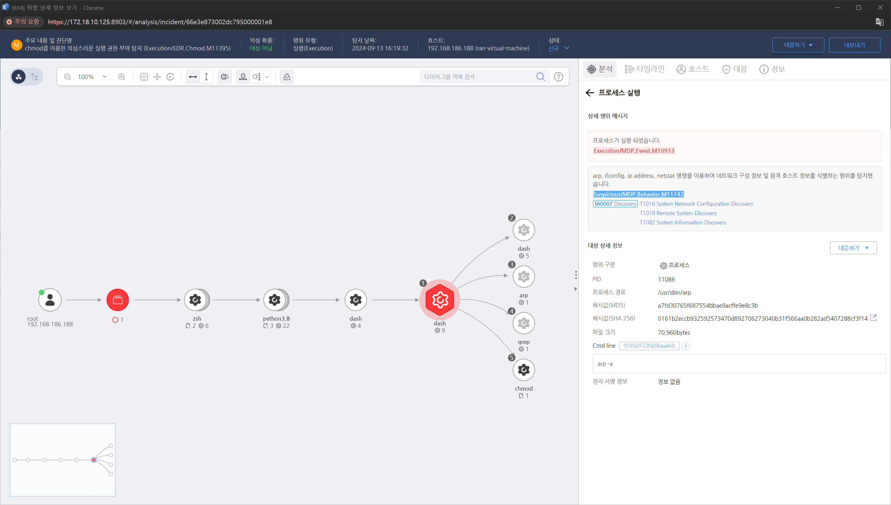

MITRE ATT&CK 액션을 기준으로 대응 방안을 작성
Action = "ProcessCreate" AND TargetProcess = "arp" OR "ifconfig" OR "ip" OR "netstat"

네트워크 연결 조회를 감지할 수 있는 시스템 로그나 네트워크 트래픽 데이터를 분석합니다. 공격자가 netstat, ipconfig, ifconfig, arp, route 같은 네트워크 명령을 사용했는지 확인합니다.
네트워크 스니핑 도구를 사용해 트래픽을 분석하고, 공격자가 네트워크 연결 상태를 조회하는 동안 발생한 비정상적인 트래픽을 식별합니다. 공격자가 내부 네트워크를 탐색하고 이동하는 과정에서 네트워크 흐름을 분석하는 것이 중요합니다.
공격자가 네트워크 탐색 도구나 명령을 사용한 흔적을 찾기 위해 시스템 포렌식을 수행합니다. 메모리 덤프 분석이나 디스크 이미징을 통해 해당 공격자가 사용한 도구나 명령어를 조사할 수 있습니다.
공격자가 네트워크 연결을 탐색하는 동안 비정상적인 세션이 발견되면 즉시 차단합니다. 공격자가 이미 다른 시스템으로 이동을 시도했을 수 있으므로, 잠재적으로 피해를 입은 시스템의 연결을 해제하고 접근을 제한합니다.
네트워크 내에서 비정상적인 연결 시도나 스캔 활동이 감지되면 방화벽 규칙을 조정해 해당 IP나 네트워크 세그먼트로의 접근을 제한할 수 있습니다.
실시간 네트워크 모니터링 도구를 통해 내부 네트워크 활동을 감시하고, 비정상적인 네트워크 연결 탐색이나 스캔 시도를 실시간으로 탐지할 수 있도록 설정합니다.
네트워크 연결 탐색이 권한 상승이나 계정 탈취와 관련될 수 있으므로, 해당 활동을 수행한 계정의 이력을 분석합니다. 특히, 네트워크 관리자 계정이나 고위 권한을 가진 계정의 활동을 조사하여 공격자가 시스템에 대한 탐색을 시도했는지 확인합니다.
네트워크를 논리적으로 구분하여 중요한 시스템과 데이터에 대한 접근을 제한합니다. 이를 통해 공격자가 네트워크 내의 다른 시스템을 쉽게 탐색하지 못하도록 합니다.
네트워크 경계와 내부 네트워크 구역 간의 트래픽을 제한하는 방화벽 규칙을 설정합니다. 불필요한 포트와 서비스를 차단하여 공격자가 원격 시스템을 식별하는 것을 방지합니다.
네트워크에 연결된 장치의 식별 및 인증을 수행하고, 승인된 장치만 네트워크에 접근할 수 있도록 합니다. 이를 통해 비인가된 장치가 네트워크를 탐색하지 못하도록 합니다.
네트워크 탐색 활동을 모니터링하고, 비정상적인 원격 시스템 검색 시도를 탐지합니다. 이를 통해 공격자의 초기 활동을 조기에 발견하고 대응할 수 있습니다.
사용자와 서비스 계정에 최소 권한 원칙을 적용하여, 필요한 권한만 부여합니다. 특히, 원격 시스템을 탐색할 수 있는 권한을 제한합니다.
네트워크와 시스템에 접근할 때 다단계 인증을 요구하여, 공격자가 인증 정보를 탈취하더라도 쉽게 접근하지 못하도록 합니다.
사용자에게 보안 인식을 높이기 위한 교육을 실시하여, 피싱 공격 등 사회공학적 기법을 통해 네트워크 정보가 유출되지 않도록 합니다.
운영 체제, 네트워크 장비, 애플리케이션 등을 최신 상태로 유지하여, 알려진 취약점을 통한 공격을 방지합니다.
네트워크 내의 비정상적인 활동을 탐지하고 차단할 수 있는 침입 탐지 및 방지 시스템을 도입합니다. 이를 통해 원격 시스템 탐색 시도를 실시간으로 감지하고 대응할 수 있습니다.
Action 실행시 함꼐 영향을 받는 다른 Techniqes
| ATT&CK |
|---|
| T1018 |
| T1016 |
| D3FEND |
|---|
| D3-NTA Network Traffic Analysis |
| D3-NTF Network Traffic Filtering |
| D3-ITF Inbound Traffic Filtering |
| D3-OTF Outbound Traffic Filtering |